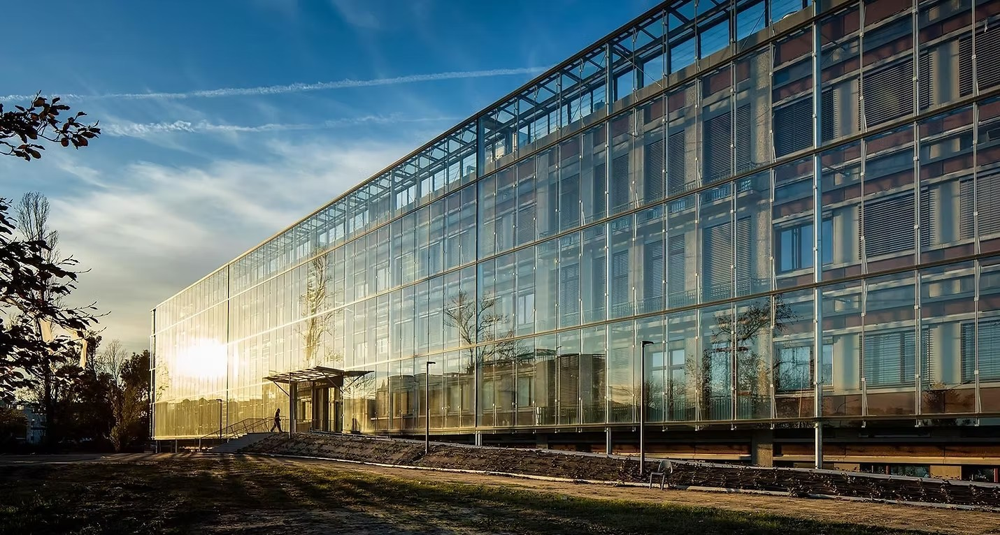

Méthode normée ISO 14040-44, l'ACV est la référence en comptabilité environnementale. Elle permet de quantifier les impacts de vos processus sur tout leur cycle de vie.
Études conformes aux normes internationales pour évaluer les impacts environnementaux
Arbitrer entre indicateurs d'impacts : réchauffement climatique, particules fines, toxicité humaine
Ateliers pratiques et projets innovants en collaboration avec l'ADEME et le milieu académique
Étude des impacts sur tout le cycle de vie, de l'extraction des matières premières à la fin de vie.
Arbitrage entre différents indicateurs : réchauffement climatique, particules fines, toxicité humaine…
Résultats quantitatifs sans jugement de valeur, fournissant un chiffrage objectif des impacts potentiels.
Encadrée par les normes ISO 14040-44 pour éviter le bricolage et les estimations imprécises.
L'analyse du cycle de vie permet de revisiter les pratiques des laboratoires et de redonner du sens aux métiers
Bien que spécialisés en chimie analytique, nous sommes capables d'étudier tout service ou produit. Nous sommes également disponibles pour des revues critiques.

En partenariat avec l'Université de Bordeaux, nous publions des travaux de recherche sur l'application de l'ACV à la chimie analytique. Nos publications sont en libre accès dans des journaux à comité de lecture.
C'est cette activité de recherche qui nourrit directement nos prestations et nos formations — un pont permanent entre science et terrain.
J'ai besoin d'une ACV →Que ce soit pour une ACV complète, une revue critique ou de l'éco-conception, nous sommes à votre disposition.
Nous contacter →